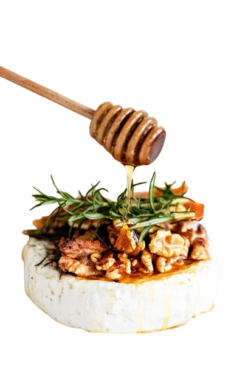
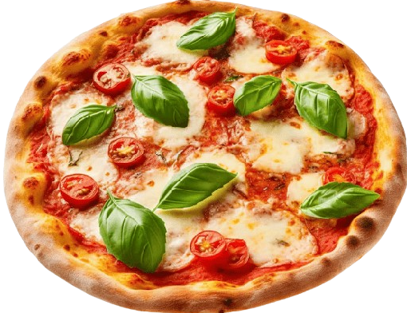

Four Popular Cheesy Recipes
Ingredients: macaroni, shredded cheddar cheese,
milk, butter, flour, and spices to taste.
Preparation: Cook the macaroni in salted water.
Make a béchamel sauce with butter, flour,
and milk,then add the shredded cheddar
cheese until melted. Mix the sauce with
the macaroni,bake for a few minutes until
golden on top, and enjoy!
Mac and Cheese

Ingredients: Gruyère cheese, Emmental cheese,
white wine, garlic, and cornstarch.
Preparation: Rub a pot with garlic,
heat the white wine,and gradually
add the grated cheeses,stirring constantly.
Add a bit of cornstarch
dissolved in wine if you need to thicken it.
Serve with bread, vegetables,
or cured meats for dipping.
Cheese Fondue

Ingredients: Brie cheese, honey walnuts
or almonds,and a bit of
rosemary (optional).
Preparation: Place the Brie in
an oven-safe dish,top with honey and
nuts,then bake at 180 °C (350 °F) for
a few minutes until soft and creamy.
Serve with bread or crackers.
Baked Brie with Honey and Nuts

Ingredients: pizza dough, tomato sauce,
fresh mozzarella cheese, basil, and olive oil.
Preparation: Spread tomato sauce over
the pizza dough, place slices of mozzarella
on top, and bake at 220 °C (425 °F) until
the crust is crispy and the cheese is melted.
Add fresh basil leaves and a drizzle of
olive oil before serving.
Margherita Pizza
© 2024 QuesosFJ. Todos los derechos reservados. Prohibida la reproducción total o parcial de este sitio web sin autorización. El contenido y diseño están protegidos por las leyes de propiedad intelectual. Para más información, consulta nuestros Términos y Condiciones.